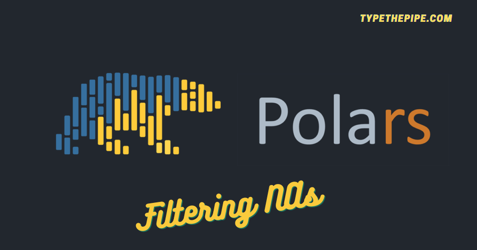

Polars: Filter rows and columns based on percentage of NAs / nulls
Optimizing Data Cleanup: Filtering Rows by Null Percentage in Python Polars. Manage NAs with precision.

Polars is well-known for working with LazyFrames and avoiding materializing data till necessary. That’s the main reason Polars Selectors work with schema available. But filtering rows and columns based on NAs is a first basic step needed for many data analysis.
So let’s see the most idiomatic way we have to do so, as the trade-off of syntactic sugar vs high performance of query planning and lazy evaluation.
import polars as pl
df = pl.DataFrame({
"column_1": [1, 2, 3],
"column_2": [4, None, 5],
"column_3": [None, 6, None],
"column_4": [7, 8, 9]
}).lazy()Filter rows based on percentage of NAs
How to filter rows based on null percentage in Python Polars? As you may notice, we could include it in a Polars Lazy pipeline.
| column_1 | column_2 | column_3 | column_4 |
|---|---|---|---|
| i64 | i64 | i64 | i64 |
| 1 | 4 | null | 7 |
| 2 | null | 6 | 8 |
| 3 | 5 | null | 9 |
Filter and drop columns based on percentage of NAs
Do you want to select columns that are populated higher than a given percentage? Here what it takes to do so. Of course, the main computation needs to materialize. But you know, you can’t make an omelette without breaking some eggs.
Has we posted about dropping columns based on NAs percentage without leaving the pipe flow, we are not doing it on Python Polars.
df.select(
[
column for i, column in
enumerate(df.columns) if df.select(pl.all().is_null().sum() / pl.all().count() < 0.6).collect().to_numpy()[0][i]
]
).collect()| column_1 | column_2 | column_4 |
|---|---|---|
| i64 | i64 | i64 |
| 1 | 4 | 7 |
| 2 | null | 8 |
| 3 | 5 | 9 |
Or even better, as suggested here:
df_mat = df.collect()
df.select(col.name for col in df_mat.null_count() / df_mat.height if col.item() <= 0.2).collect()| column_1 | column_4 |
|---|---|
| i64 | i64 |
| 1 | 7 |
| 2 | 8 |
| 3 | 9 |
Carlos Vecina
Senior Data Scientist at Jobandtalent
Senior Data Scientist at Jobandtalent | AI & Data Science for Business